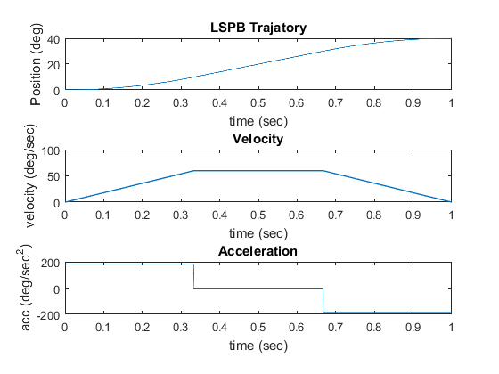

clc;close all;
clear;
to = 0; qo = 0;
tf = 1; qf =40;
V = 60;
tb = (qo - qf + V*tf)/V;
Vmin = (qf - qo)/tf;
a = V/tb;
T = to:(tf-to)/500:tf;
Q = [];qdiff=[];qdiffSq=[];
for t = to:(tf-to)/500:tf
if 0<=t && t<tb
q = qo + (a*t^2)/2;
Qdiff=a*t;
QdiffSq=a;
Q = [Q,q];
qdiff=[qdiff,Qdiff];
qdiffSq=[qdiffSq,QdiffSq];
end
if tb<=t && t<tf-tb
q = ((qf + qo - V*tf)/2) + (V*t);
Q = [Q,q];
Qdiff=V;
QdiffSq=0;
qdiff=[qdiff,Qdiff];
qdiffSq=[qdiffSq,QdiffSq];
end
if tf-tb<=t && t<=tf
q = qf - ((a*tf^2)/2) + (a*tf*t) - (a*t^2)/2;
Q = [Q,q];
Qdiff=a*tf-a*t;
QdiffSq=-a;
qdiff=[qdiff,Qdiff];
qdiffSq=[qdiffSq,QdiffSq];
end
end
subplot(3,1,1),plot(T,Q);
xlabel('time (sec)'); ylabel('Position (deg)');
title('LSPB Trajatory');
subplot(3,1,2),plot(T,qdiff,'LineWidth',1);
xlabel('time (sec)'); ylabel('velocity (deg/sec)');
title('Velocity');
subplot(3,1,3),plot(T,qdiffSq);
xlabel('time (sec)'); ylabel('acc (deg/sec^2)');
title('Acceleration');
